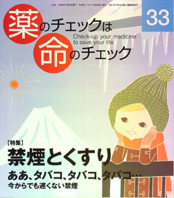

No.33 特集 禁煙とくすり 2009年1月 発行
タバコ、タバコ、タバコ♪
タバコをやめ〜ると
みんな、みんな、みんな
みんなが幸せになるうぅうぅ♪
と歌いたいくらいタバコは百害あって一利なしなのですが
それでも吸いたいタバコってなんなのでしょう？
タバコの害は知っているけど吸いたいと言う人
──あなたは本当の害を知っていますか？
タバコの害と正面から向き合ってみてください
目を逸らさずに。
もくじ
特集 禁煙とくすり
■ 禁煙への取り組み 編集部
■ 専門医へのインタビュー：大島明医師に聞く 編集部
■ クイズに答えて本をゲットしよう 編集部
■ 疫学入門編：喫煙と肺癌 大島 明
■ 禁煙のしかた 編集部
■ 依存だけでない、ニコチンの害 浜 六郎
■ 禁煙を助ける薬剤の評価 浜 六郎
ニコチンパッチ、ニコチンガム／パレニクリン（チャンピックス）
■ 患者用 薬の説明書 編集部
・ニコチンガム、ニコチンパッチ
・チャンピックス
トピック
■ 2009年にはタミフルの害に決着を 浜 六郎
連載
■ コーヒー無礼区 風のガーデンと緒方拳さん 坂口啓子
■ 海外情報：偽造薬剤で死亡事故／SSRIで男子不妊症？／メーカーは都合の悪い情報は出さない
■ リレーエッセー われら後期高齢者 春本幸子
■ みんなのやさしい生命倫理（33） 生老病死（3） 谷田憲俊
その他
■ 質問箱（１）ステロイド剤を使う方が良い場合ってあるの？
（２）降圧剤を飲んでも大丈夫？
■ 読者の声
■ 書評（１）わたしを束ねないで
（２）悪魔のマーケティング―タバコ産業が語った真実
（３）アトピー性皮膚炎―患者1000人の証言
■ 用語の解説
■ 第６回医薬ビジランスセミナー 参加者の声